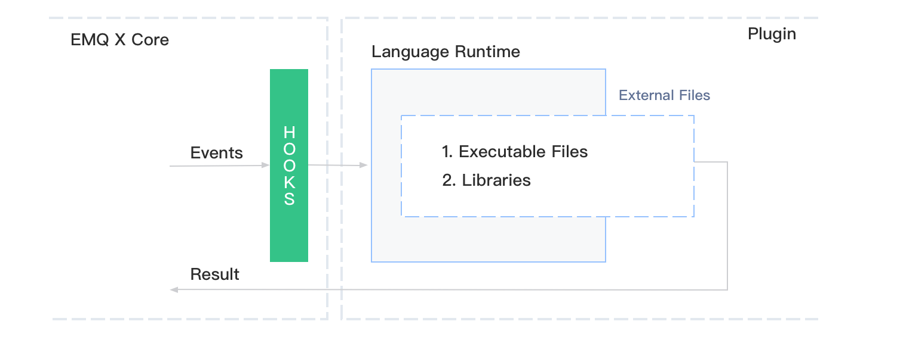

多语言支持
EMQ X 发行包中，提供了一些用于多语言支持的 插件。它允许你使用其它编程语言来扩展 EMQ X 的行为，其在系统中的架构为：

- 多语言支持是作为一个插件出现的，它基于 emqx 核心项目所提供的 钩子 特性，拿到 EMQ X 的事件/消息。
- 不同的语言环境，需要有不同的语言支持插件。
- 该支持插件内嵌了该语言运行时的所有环境。
- 用户仅需要编写该语言的脚本或库文件，供该支持插件调用。
这是实现多语言支持基本逻辑。在使用这类插件时，请保证对 钩子 和 插件 都有一定的了解。
Lua
Lua 的支持由 emqx_lua_hook 实现。它包括：
- 一套 Lua 的运行时环境，由 luerl 实现。
- 一些控制命令，用于管理 Lua 的加载和卸载等。
示例
在 EMQ X 发行包中，用户自定义的 Lua 脚本文件应该放在 data/script/ 中。
以控制消息的发送内容为例，新增文件 data/script/test.lua：
function on_message_publish(clientid, username, topic, payload, qos, retain)
return topic, "hello", qos, retain
end
function register_hook()
return "on_message_publish"
end
该脚本表明：
- 实现了一个回调函数
on_message_publish，将所有发布消息的payload字段修改为hello。 - 用
register_hook告诉emqx_lua_hook，需要注册的回调函数名称列表。
值得注意的是，这些回调函数的名称、参数、返回值的数据类型和个数都是固定，必须与提供的示例一致。
脚本编写完成后，需要手动将其加载至 emqx_lua_hook 插件中：
首先确保 emqx_lua_hook 插件已经启动：
./bin/emqx_ctl plugins load emqx_lua_hook
加载 test.lua 到 emqx_lua_hook 中：
./bin/emqx_ctl luahook load test.lua
执行成功，则表示脚本已成功加载。否则，请检查源文件的语法格式是否正确。
完成后，可以启动两个 MQTT 客户端，一个订阅主任意主题，另一个发布任意消息到刚刚订阅的主题上。可发现订阅端收到的消息内容都是 hello。证明 test.lua 脚本已经生效。
回调函数
支持的回调函数，及参数类型参考：emqx-web-hook - README.md
示例参考：examples.lua
命令
加载指定 Lua 脚本：
## Script：脚本文件名称
luahook load <Script>
卸载指定 Lua 脚本：
luahook unload <Script>
重新加载指定 Lua 脚本：
luahook reload <Script>
加载指定 Lua 脚本，并设置其跟随 emqx_lua_hook 启动时一同启动：
luahook enable <Script>
卸载指定 Lua 脚本，并取消跟随 emqx_lua_hook 一同启动：
luahook disable <Script>